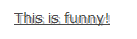
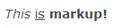
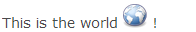

Using SWT API it is possible to apply any Font (including bold and italic styles) to almost any widget, as long as it is installed on the client device:
Label boldLabel = new Label( parent, SWT.NONE ); boldLabel.setFont( new Font( parent.getDisplay(), "Arial", 16, SWT.BOLD ) );
Note that the font height is measured in pixels in RAP (for historical reasons), while SWT uses points. Usually, you can convert the values using this equation:
1px = 0.75pt
therefore
12pt / 0.75 = 16px
While the SWT API can only modify one widget at a time, the RAP CSS theming API is designed to change the appearance for all widget of a given class. However, specific instances can still be targeted using custom variants. The theming API also features some additional properties like text-shadow and text-decoration.
CSS:
Label.customLabel {
font: bold 16px Arial;
text-shadow: 2px 2px #bbbbbb;
text-decoration: underline;
}
Java:
Label customLabel = new Label( parent, SWT.NONE ); customLabel.setData( RWT.CUSTOM_VARIANT, "customLabel" ); customLabel.setText( "This is funny!" );
Result:

The properties font, text-shadow and text-decoration are available on nearly all themeable widgets. Note that text-shadow is not supported in Internet Explorer 8.0 and below.
While SWT and theming API are able to change the font of any widget, they can usually only change the font for the entire widget. (Tree and table items can change single cells.) Using the RAP-exclusive (not supported in SWT) markup feature, it is possible to change only parts of the text. This is currently supported on Label, CLabel, ToolTip, List, Tree and Table. Before you can use markup in your widget, you must first enable it explicitly using the RWT.MARKUP_ENABLED constant as shown below, directly after calling the constructor. (It may not be possible to enable this feature later on, and it can not be disabled again.) Afterwards, a subset of HTML tags can be freely used in the widgets text property:
Label markupLabel = new Label( parent, SWT.NONE ); markupLabel.setData( RWT.MARKUP_ENABLED, Boolean.TRUE ); markupLabel.setText( "<i>This</i> <ins>is</ins> <b>markup!</b>" );
Result:

To achieve similar effects in SWT, the application would have to draw on the widget using a PaintEvent, which is not supported in RAP except on Canvas. The markup is validated when the text is set on the widget, and incorrect or unsupported markup will cause an IllegalArgumentException. Using markup without enabling the feature first will not cause an exception, just display the text as is.
The ToolTipText property also supports markup if enabled with TOOLTIP_MARKUP_ENABLED:
someWidget.setData( RWT.TOOLTIP_MARKUP_ENABLED, Boolean.TRUE ); someWidget.setToolTipText( "<i>Markup</i> inside <b>a tooltip</b>" );
Putting a "<a>" tag in the toolTipText slightly alters the behavior of the tooltip: Normally a tooltip immediately disappears if the mouse cursor hovers it (assuming the user may be aiming for the underlying widget). But since anchor elements are interactive, the tooltip stays until the link is clicked or the mouse cursor is moves away from the tooltip.
If the physical and logical tags allowed in the markup are not sufficient for your needs, you may also use a style attribute to specify any CSS code supported by the browser.
Label cssLabel = new Label( parent, SWT.NONE ); cssLabel.setData( RWT.MARKUP_ENABLED, Boolean.TRUE ); cssLabel.setText( "<span style='font:bold 16px Arial;'>This is also BOLD</span>" );
Unlike the HTML tags, the style properties are not validated on the server. Invalid syntax within the style attribute will likely be ignored by the browser, as will unsupported properties. Using CSS3 properties is therefore not recommended when targeting older browser.
The markup feature may not only be used to change the font of the text, but can also insert elements that are not pure text.
Using the <br/> tag, it is possible to add line breaks. While this is also possible without markup on Label, this is a new feature for List, Tree and Table.
The <img/> tag can insert images anywhere into your text. You can use any URL as the source, and any static images should preferably be provided by another servlet or server. However, if you need the RAP application to provide the image, it has to be registered as a resource first. (You can also de-register the resource when it is no longer needed.)
Label label = new Label( parent, SWT.NONE ); label.setData( RWT.MARKUP_ENABLED, Boolean.TRUE ); String src = RWT.getResourceManager().getLocation( "icon.png" ); label.setText( "This is the world <img width='24' height='24' src='" + src + "'/> !" );
Result:

The widget and height attributes are mandatory and do not have to match those
of the actual image.
Finally, you can use markup to insert real hyperlinks (<a>
)into your application.
If you do not want to close the UI when the user clicks it, make sure to also set the target
property. Alternatively, you can integrate the link with the
BrowserNavigation
by
pointing to a fragment id. Examples:
Label linkLabel = new Label( parent, SWT.NONE ); linkLabel.setData( RWT.MARKUP_ENABLED, Boolean.TRUE ); linkLabel.setText( "Visit <a href='http://www.eclipse.org/rap' target='_blank'>RAP</a>!" ); Label navLabel = new Label( parent, SWT.NONE ); navLabel.setData( RWT.MARKUP_ENABLED, Boolean.TRUE ); navLabel.setText( "Go to <a href='#navPoint'>navPoint</a>!" );
After setting the RWT.MARKUP_ENABLED property of a Tree/Table/Grid/List widget to Boolean.TRUE, markup is enabled for all its items, except columns. There is, however, one more property that might need to be set. Since RAP can not predict how high items with markup are going to be, it will not include it in the layout calculations for the height of the rows. This may result in cut off content, especially if <br/>, <span> or <img/> tags are used. To fix this, you can set the height the rows should have manually using the RWT.CUSTOM_ITEM_HEIGHT constant:
List markupList = new List( parent, SWT.BORDER );
markupList.setData( RWT.MARKUP_ENABLED, Boolean.TRUE );
markupList.setData( RWT.CUSTOM_ITEM_HEIGHT, new Integer( 40 ) );
markupList.setItems( new String[]{
"<big>big</big>",
"<small>small</small>",
"with<br/>break"
} );
RWT.CUSTOM_ITEM_HEIGHT applies only to Tree, Table and List. For Grid, use its setItemHeight method.
When calculating the value for the item height, account for the cell/item padding defined in the List/Tree/Table theming. If the HTML content is smaller than the inner cell/item height (i.e. with subtracted padding), it will be top-aligned and leaving empty space at the bottom. If it is higher, the content will be top-aligned (still respecting padding) and cut off at the bottom.
Note: To achieve more complex layouts within an item, consider using templates instead.
All widgets that support markup and selection also support a special kind of hyperlink that can be intercepted with a selection event. Read more about it in the article on browser navigation.
While RAP does not include a markup-enabled text field, there is a port of the Nebula RichTextEditor based on the the CKEditor included in RAP.